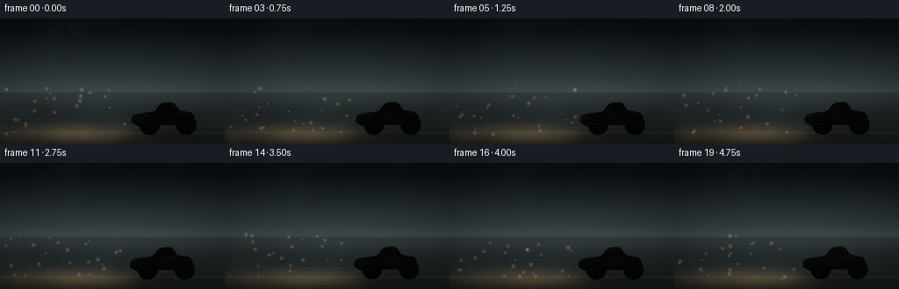
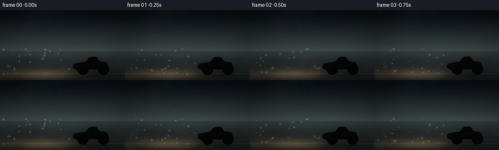

CODING AGENTS AS PIXEL WORLD MODELS
traex/DeepSeek-V4.1-Flash · phygen_051
点击播放 · 原生 RGB 像素
逐轮保存的候选
回放视频、检查图与代码变化。
每份候选均可单独播放。实际图片检查记录在下方工具轨迹中。
候选 01播放与检查图
点击播放 · 原生 RGB 像素


展开代码变化
--- 上一保存版本
+++ 本次保存版本
@@ -0,0 +1,377 @@
+"""Procedural renderer for a headlight beam cutting through heavy night fog."""
+
+from pathlib import Path
+
+import numpy as np
+from PIL import Image, ImageDraw, ImageFilter
+
+import artifact_io
+
+
+W, H = 256, 144
+N, FPS = 20, 4.0
+S = 4
+RW, RH = W * S, H * S
+CASE_DIR = Path(__file__).resolve().parent
+
+
+def periodic_noise(height, width, seed, sigma):
+ """Smooth noise that wraps at both edges."""
+ rng = np.random.default_rng(seed)
+ white = rng.standard_normal((height, width)).astype(np.float32)
+ fy = np.fft.fftfreq(height)[:, None]
+ fx = np.fft.fftfreq(width)[None, :]
+ transfer = np.exp(-2.0 * np.pi**2 * sigma**2 * (fx**2 + fy**2))
+ field = np.fft.ifft2(np.fft.fft2(white) * transfer).real
+ field -= field.mean()
+ field /= field.std() + 1e-6
+ return field
+
+
+def fbm(height, width, seed):
+ field = (
+ 0.50 * periodic_noise(height, width, seed + 0, 24.0)
+ + 0.28 * periodic_noise(height, width, seed + 1, 11.0)
+ + 0.15 * periodic_noise(height, width, seed + 2, 5.0)
+ + 0.07 * periodic_noise(height, width, seed + 3, 2.2)
+ )
+ field -= field.min()
+ field /= field.max() + 1e-6
+ return field.astype(np.float32)
+
+
+def resize_float(array, width, height, resample=Image.Resampling.BICUBIC):
+ image = Image.fromarray(array.astype(np.float32), mode="F")
+ return np.asarray(image.resize((width, height), resample), dtype=np.float32)
+
+
+def smoothstep(edge0, edge1, value):
+ t = np.clip((value - edge0) / (edge1 - edge0), 0.0, 1.0)
+ return t * t * (3.0 - 2.0 * t)
+
+
+def shifted_texture(texture, dx, dy=0):
+ """Translate a periodic texture, retaining sub-pixel movement."""
+ ih, iw = texture.shape
+ x0 = int(np.floor(dx))
+ y0 = int(np.floor(dy))
+ fx, fy = dx - x0, dy - y0
+ a = np.roll(texture, (y0, x0), axis=(0, 1))
+ b = np.roll(texture, (y0, x0 + 1), axis=(0, 1))
+ c = np.roll(texture, (y0 + 1, x0), axis=(0, 1))
+ d = np.roll(texture, (y0 + 1, x0 + 1), axis=(0, 1))
+ top = a * (1.0 - fx) + b * fx
+ bottom = c * (1.0 - fx) + d * fx
+ return top * (1.0 - fy) + bottom * fy
+
+
+def make_background(xx, yy, fog_texture):
+ horizon = 0.585 * RH
+ top_color = np.array([4, 8, 12], np.float32)
+ horizon_color = np.array([42, 51, 52], np.float32)
+ ground_color = np.array([7, 10, 11], np.float32)
+
+ sky_t = smoothstep(0.0, horizon, yy)
+ image = top_color + (horizon_color - top_color) * sky_t[..., None]
+ ground_mask = smoothstep(horizon - 2, horizon + 5, yy)
+ ground_t = np.clip((yy - horizon) / (RH - horizon), 0.0, 1.0)
+ ground = horizon_color * 0.62 + (ground_color - horizon_color * 0.62) * ground_t[..., None]
+ image = image * (1.0 - ground_mask[..., None]) + ground * ground_mask[..., None]
+
+ # A soft band of illuminated mist sits on the horizon.
+ haze = np.exp(-((yy - horizon) / (0.085 * RH)) ** 2)
+ image += haze[..., None] * np.array([11, 13, 13], np.float32)
+
+ # The asphalt is slightly cool and wet, with long horizontal tonal streaks.
+ asphalt = ground_mask * (0.48 + 0.18 * fog_texture)
+ image += asphalt[..., None] * np.array([8, 9, 9], np.float32)
+ road_edge = np.exp(-((yy - 0.905 * RH) / 4.0) ** 2)
+ image += road_edge[..., None] * np.array([10, 11, 10], np.float32)
+ return image
+
+
+def tree_layer():
+ """Faint, irregular tree line made once at render resolution."""
+ mask = Image.new("L", (RW, RH), 0)
+ draw = ImageDraw.Draw(mask)
+ rng = np.random.default_rng(71)
+ for layer, (base_y, color, step) in enumerate(
+ [(337, 19, 34), (326, 12, 47), (314, 8, 63)]
+ ):
+ points = [(-20, RH), (-20, base_y)]
+ x = -20
+ while x < RW + 40:
+ x += int(rng.uniform(step * 0.45, step))
+ crown = base_y - int(rng.uniform(7, 39 + layer * 3))
+ points.append((x, crown))
+ points.append((x + int(rng.uniform(4, 11)), base_y + int(rng.uniform(-1, 5))))
+ points.extend([(RW + 40, base_y), (RW + 40, RH)])
+ draw.polygon(points, fill=color)
+ return np.asarray(mask, dtype=np.float32) / 255.0
+
+
+def pole_layer():
+ """Low-contrast roadside poles establish depth without competing with the beam."""
+ mask = Image.new("L", (RW, RH), 0)
+ draw = ImageDraw.Draw(mask)
+ for x, y, height, alpha in [(85, 505, 268, 24), (296, 455, 214, 18)]:
+ draw.rectangle((x, y - height, x + 5, y), fill=alpha)
+ draw.line((x - 17, y - height + 16, x + 22, y - height + 13), fill=alpha, width=3)
+ draw.line((x + 2, y - height + 23, x + 21, y - height + 58), fill=alpha, width=2)
+ return np.asarray(mask, dtype=np.float32) / 255.0
+
+
+def draw_car(car_x, car_y, wheel_angle):
+ """Return an RGBA high-resolution car layer."""
+ layer = Image.new("RGBA", (RW, RH), (0, 0, 0, 0))
+ alpha = Image.new("L", (RW, RH), 0)
+ adraw = ImageDraw.Draw(alpha)
+
+ ox, oy = car_x, car_y
+ body_points = [
+ (599, 469), (602, 450), (609, 440), (646, 431), (687, 427),
+ (704, 423), (727, 394), (741, 385), (777, 382), (793, 387),
+ (815, 419), (843, 424), (872, 429), (885, 447), (886, 477),
+ (877, 490), (855, 496), (832, 493), (816, 487), (714, 487),
+ (687, 493), (632, 493), (613, 484),
+ ]
+ body_points = [(x + ox, y + oy) for x, y in body_points]
+ adraw.polygon(body_points, fill=255)
+ alpha = alpha.filter(ImageFilter.GaussianBlur(0.45))
+
+ yy = np.arange(RH, dtype=np.float32)[:, None]
+ body_t = np.clip((yy - (381 + oy)) / (116.0), 0.0, 1.0)
+ top = np.array([30, 43, 52], np.float32)
+ bottom = np.array([7, 12, 16], np.float32)
+ body_rgb = top[None, None, :] + (bottom - top)[None, None, :] * body_t[..., None]
+ body_rgb = np.broadcast_to(body_rgb, (RH, RW, 3)).copy()
+
+ # Faint blue sky reflection down the upper flank.
+ flank = np.exp(-((yy - (424 + oy)) / 20.0) ** 2)
+ body_rgb += flank[..., None] * np.array([10, 15, 18], np.float32)
+ car_pixels = np.dstack([body_rgb, np.asarray(alpha, np.float32) / 255.0])
+ car = Image.fromarray(np.clip(car_pixels * 255.0, 0, 255).astype(np.uint8), "RGBA")
+ draw = ImageDraw.Draw(car)
+
+ # Side glass catches the cold ambient fog.
+ front_window = [
+ (716 + ox, 421 + oy), (735 + ox, 399 + oy),
+ (758 + ox, 395 + oy), (758 + ox, 420 + oy),
+ ]
+ rear_window = [
+ (766 + ox, 395 + oy), (787 + ox, 395 + oy),
+ (805 + ox, 404 + oy), (814 + ox, 420 + oy), (766 + ox, 420 + oy),
+ ]
+ draw.polygon(front_window, fill=(25, 42, 50, 255))
+ draw.polygon(rear_window, fill=(21, 36, 44, 255))
+ draw.line(
+ [(722 + ox, 416 + oy), (740 + ox, 401 + oy), (754 + ox, 399 + oy)],
+ fill=(70, 91, 99, 185), width=3,
+ )
+ draw.line(
+ [(772 + ox, 400 + oy), (788 + ox, 400 + oy), (801 + ox, 407 + oy)],
+ fill=(56, 75, 83, 130), width=2,
+ )
+ draw.line([(761 + ox, 396 + oy), (761 + ox, 421 + oy)], fill=(8, 14, 18, 255), width=4)
+ draw.line([(707 + ox, 422 + oy), (817 + ox, 421 + oy)], fill=(6, 11, 14, 255), width=3)
+
+ # Door and bonnet seams are deliberately sparse at this image scale.
+ draw.line([(724 + ox, 428 + oy), (722 + ox, 486 + oy)], fill=(5, 9, 12, 185), width=2)
+ draw.line([(664 + ox, 433 + oy), (637 + ox, 438 + oy)], fill=(58, 70, 75, 80), width=2)
+ draw.line([(777 + ox, 429 + oy), (846 + ox, 430 + oy)], fill=(56, 70, 76, 75), width=2)
+ draw.rounded_rectangle((752 + ox, 448 + oy, 780 + ox, 455 + oy), radius=3, fill=(37, 47, 52, 230))
+
+ # Roof and shoulder highlights keep the dark silhouette legible in fog.
+ draw.line(
+ [(735 + ox, 390 + oy), (746 + ox, 387 + oy), (780 + ox, 385 + oy), (790 + ox, 389 + oy)],
+ fill=(87, 105, 111, 170), width=3,
+ )
+ draw.line(
+ [(612 + ox, 449 + oy), (618 + ox, 441 + oy), (652 + ox, 434 + oy)],
+ fill=(99, 104, 91, 115), width=2,
+ )
+
+ # Wheels: dark tire, cool rim, and a rotating spoke pattern.
+ for cx, cy, radius in [(681 + ox, 486 + oy, 46), (849 + ox, 486 + oy, 46)]:
+ draw.ellipse((cx - radius, cy - radius, cx + radius, cy + radius), fill=(3, 5, 6, 255))
+ draw.ellipse(
+ (cx - radius + 5, cy - radius + 5, cx + radius - 5, cy + radius - 5),
+ fill=(13, 17, 20, 255),
+ )
+ draw.ellipse((cx - 27, cy - 27, cx + 27, cy + 27), fill=(27, 32, 35, 255))
+ draw.ellipse((cx - 21, cy - 21, cx + 21, cy + 21), fill=(8, 12, 14, 255))
+ for spoke in range(7):
+ angle = wheel_angle + spoke * (2.0 * np.pi / 7.0)
+ x1 = cx + 7.0 * np.cos(angle)
+ y1 = cy + 7.0 * np.sin(angle)
+ x2 = cx + 21.0 * np.cos(angle)
+ y2 = cy + 21.0 * np.sin(angle)
+ draw.line((x1, y1, x2, y2), fill=(54, 62, 65, 255), width=4)
+ draw.ellipse((cx - 6, cy - 6, cx + 6, cy + 6), fill=(64, 69, 70, 255))
+ draw.arc(
+ (cx - radius + 2, cy - radius + 2, cx + radius - 2, cy + radius - 2),
+ 198, 335, fill=(59, 67, 70, 160), width=2,
+ )
+
+ # Lamps and bumpers.
+ draw.rounded_rectangle((599 + ox, 450 + oy, 613 + ox, 461 + oy), radius=4, fill=(205, 188, 137, 255))
+ draw.ellipse((602 + ox, 452 + oy, 609 + ox, 458 + oy), fill=(255, 245, 209, 255))
+ draw.rounded_rectangle((599 + ox, 468 + oy, 619 + ox, 477 + oy), radius=2, fill=(28, 33, 34, 255))
+ draw.rounded_rectangle((868 + ox, 451 + oy, 883 + ox, 459 + oy), radius=3, fill=(100, 20, 18, 255))
+ draw.ellipse((877 + ox, 453 + oy, 882 + ox, 458 + oy), fill=(235, 54, 32, 255))
+ draw.line(
+ [(616 + ox, 477 + oy), (634 + ox, 481 + oy), (686 + ox, 483 + oy)],
+ fill=(46, 52, 52, 140), width=2,
+ )
+ return np.asarray(car, dtype=np.float32) / 255.0
+
+
+def add_radial_glow(image, cx, cy, radius, color, strength):
+ y0 = max(0, int(cy - radius * 3.0))
+ y1 = min(RH, int(cy + radius * 3.0) + 1)
+ x0 = max(0, int(cx - radius * 3.0))
+ x1 = min(RW, int(cx + radius * 3.0) + 1)
+ local_y, local_x = np.mgrid[y0:y1, x0:x1].astype(np.float32)
+ r2 = (local_x - cx) ** 2 + (local_y - cy) ** 2
+ glow = np.exp(-r2 / (2.0 * radius**2))
+ image[y0:y1, x0:x1] += glow[..., None] * np.asarray(color, np.float32) * strength
+
+
+def render_frame(index, xx, yy, fog_a, fog_b, tree, poles):
+ t = index / FPS
+
+ # Slow tracking motion and an idling suspension make the scene feel alive.
+ car_x = -3.0 * t + 0.8 * np.sin(0.55 * t)
+ car_y = 1.1 * np.sin(2.0 * np.pi * 0.82 * t)
+ wheel_angle = -2.6 * t
+ pulse = 0.965 + 0.035 * np.sin(2.0 * np.pi * 0.43 * t + 0.4)
+
+ fog1 = shifted_texture(fog_a, -4.7 * t, 0.55 * t)
+ fog2 = shifted_texture(fog_b, 7.0 * t, -0.35 * t)
+ fog_mix = np.clip(0.58 * fog1 + 0.42 * fog2, 0.0, 1.0)
+ fog_full = resize_float(fog_mix, RW, RH, Image.Resampling.BICUBIC)
+ fog_fine = resize_float(
+ np.clip(0.70 * fog2 + 0.30 * fog_a, 0.0, 1.0),
+ RW, RH, Image.Resampling.BILINEAR,
+ )
+
+ image = make_background(xx, yy, fog_full)
+
+ # Barely visible woods and two utility poles give the fog a spatial scale.
+ image *= (1.0 - 0.19 * tree[..., None])
+ image += (tree * (0.28 + 0.34 * fog_full))[..., None] * np.array([15, 18, 17], np.float32)
+ image += (poles * (0.45 + 0.30 * fog_full))[..., None] * np.array([21, 23, 21], np.float32)
+
+ # Fine horizontal texture reads as wet asphalt and moves under the car.
+ asphalt_mask = smoothstep(0.59 * RH, 0.66 * RH, yy)
+ wet = fog_fine * (0.55 + 0.45 * np.sin(yy * 0.17 + 1.8) ** 2)
+ image += (asphalt_mask * wet)[..., None] * np.array([7, 8, 8], np.float32)
+
+ # Volumetric headlight cone. The fog texture breaks it into visible shafts.
+ sx = 607.0 + car_x
+ sy = 455.0 + car_y
+ dx = sx - xx
+ valid = dx > 0.0
+ d = np.maximum(dx, 0.0)
+ slope = 0.050 + 0.005 * np.sin(2.0 * np.pi * 0.16 * t + 0.5)
+ center = sy + slope * d + 2.8 * np.sin(d / 135.0 + 0.65 * t)
+ halfwidth = 8.0 + 0.165 * d
+ edge = np.exp(-(np.abs(yy - center) / halfwidth) ** 4)
+ length_fade = (1.0 - np.exp(-d / 14.0)) * np.exp(-d / 1180.0)
+ texture = 0.52 + 0.72 * fog_full
+ beam = edge * length_fade * texture * valid
+ beam *= pulse
+
+ # A narrow secondary lamp beam and a hot center give the cone structure.
+ center2 = sy - 5.0 + 0.034 * d + 2.2 * np.sin(d / 170.0 - 0.5 * t)
+ edge2 = np.exp(-(np.abs(yy - center2) / (4.0 + 0.060 * d)) ** 4)
+ beam2 = edge2 * length_fade * (0.42 + 0.55 * fog_fine) * valid
+ beam2 *= pulse
+
+ warm = np.array([1.00, 0.82, 0.57], np.float32)
+ pale = np.array([0.95, 0.91, 0.75], np.float32)
+ image += beam[..., None] * warm * 0.78
+ image += beam2[..., None] * pale * 0.46
+
+ # Long amber smear across the wet road below the cone.
+ road_y = 0.915 * RH
+ reflection = np.exp(-((xx - 330.0) / 300.0) ** 2)
+ reflection *= np.exp(-((yy - road_y) / 42.0) ** 2)
+ reflection *= 0.38 + 0.78 * fog_fine
+ image += reflection[..., None] * np.array([73, 53, 28], np.float32) * pulse
+
+ # Soft contact shadow, then the car itself.
+ shadow = Image.new("L", (RW, RH), 0)
+ sd = ImageDraw.Draw(shadow)
+ sd.ellipse(
+ (589 + car_x, 509 + car_y, 902 + car_x, 548 + car_y),
+ fill=170,
+ )
+ shadow = shadow.filter(ImageFilter.GaussianBlur(15))
+ shadow_np = np.asarray(shadow, np.float32)[..., None] / 255.0
+ image *= 1.0 - 0.53 * shadow_np
+
+ car = draw_car(car_x, car_y, wheel_angle)
+ car_alpha = car[..., 3:4]
+ image = image * (1.0 - car_alpha) + car[..., :3] * car_alpha
+
+ # Lamp and tail-lamp bloom are added after the body so the optics feel real.
+ add_radial_glow(image, sx, sy, 18.0, (1.00, 0.78, 0.48), 1.25 * pulse)
+ add_radial_glow(image, sx, sy, 5.0, (1.00, 0.96, 0.82), 2.3 * pulse)
+ add_radial_glow(image, 881.0 + car_x, 456.0 + car_y, 8.0, (0.72, 0.07, 0.025), 0.42)
+
+ # Two layers of moving foreground mist soften silhouettes and unify the image.
+ mist_a = smoothstep(0.40, 0.83, fog_full)
+ mist_b = smoothstep(0.50, 0.91, fog_fine)
+ foreground = np.clip(0.045 + 0.085 * mist_a + 0.050 * mist_b, 0.0, 0.18)
+ mist_color = np.array([48, 57, 58], np.float32)
+ image = image * (1.0 - foreground[..., None]) + mist_color * foreground[..., None]
+
+ # Very faint drifting motes catch the headlights.
+ rng = np.random.default_rng(900 + index)
+ particle_layer = np.zeros((RH, RW), np.float32)
+ for _ in range(24):
+ px = rng.uniform(25, 585) + car_x
+ py = rng.uniform(315, 530)
+ radius = rng.uniform(2.0, 6.0)
+ local_y, local_x = np.mgrid[
+ max(0, int(py - 12)):min(RH, int(py + 13)),
+ max(0, int(px - 12)):min(RW, int(px + 13)),
+ ].astype(np.float32)
+ dot = np.exp(-((local_x - px) ** 2 + (local_y - py) ** 2) / (2.0 * radius**2))
+ particle_layer[
+ max(0, int(py - 12)):min(RH, int(py + 13)),
+ max(0, int(px - 12)):min(RW, int(px + 13)),
+ ] += dot
+ image += particle_layer[..., None] * np.array([54, 45, 30], np.float32)
+
+ # Gentle vignette, then a filmic shoulder and the final 4x downsample.
+ nx = (xx - RW * 0.5) / (RW * 0.58)
+ ny = (yy - RH * 0.48) / (RH * 0.62)
+ vignette = 1.0 - 0.24 * np.clip(nx**2 + ny**2, 0.0, 1.0)
+ image *= vignette[..., None]
+ image = np.clip(image, 0.0, 255.0)
+ image = 255.0 * (image / 255.0) ** 0.92
+ image = np.clip(image, 0.0, 255.0)
+
+ rendered = Image.fromarray(np.round(image).astype(np.uint8), "RGB")
+ return np.asarray(rendered.resize((W, H), Image.Resampling.LANCZOS), dtype=np.uint8)
+
+
+def main():
+ yy, xx = np.mgrid[0:RH, 0:RW].astype(np.float32)
+ fog_a = fbm(144, 256, 101)
+ fog_b = fbm(144, 256, 211)
+ tree = tree_layer()
+ poles = pole_layer()
+ frames = [
+ render_frame(index, xx, yy, fog_a, fog_b, tree, poles)
+ for index in range(N)
+ ]
+ frames = np.stack(frames)
+ artifact_io.save(frames, CASE_DIR)
+ print(f"saved {frames.shape} to {CASE_DIR}")
+
+
+if __name__ == "__main__":
+ main()
可观测工具轨迹
实际执行的命令与返回图片。
命令 1exit 0
/bin/bash -c "pwd && rg --files -g 'prompt.txt' -g 'GENERATION_RULES.md' -g 'task_spec.json' -g '"'!**/.git/**'"'"
命令 2exit 0
/bin/bash -c 'ls -la'
命令 3exit 0
/bin/bash -c 'git status --short'
命令 4exit 0
/bin/bash -c 'cat prompt.txt'
命令 5exit 0
/bin/bash -c 'cat GENERATION_RULES.md'
命令 6exit 0
/bin/bash -c 'cat task_spec.json'
命令 7exit 0
/bin/bash -c "sed -n '1,240p' artifact_io.py"
命令 8exit 0
/bin/bash -c "python - <<'PY'
import numpy, PIL
print('numpy', numpy.__version__)
print('PIL', PIL.__version__)
PY"命令 9exit 0
/bin/bash -c "python - <<'PY' try: import scipy; print(scipy.__version__) except Exception as e: print(type(e).__name__) PY"
命令 10exit 0
/bin/bash -c 'python generate.py'
命令 11exit 1
/bin/bash -c 'command -v chafa || command -v viu || command -v img2txt || command -v jp2'
命令 12exit 0
/bin/bash -c "python - <<'PY'
from PIL import Image
import numpy as np
for fi in (0,7,14,19):
im=np.array(Image.open(f'frames/{fi:02d}.png').convert('L'))
im=np.array(Image.fromarray(im).resize((96,36)))
chars=' .:-=+*#%@'
print('\\nFRAME',fi)
for row in im:
print(''.join(chars[min(len(chars)-1,int(v)*(len(chars)-1)//256)] for v in row))
PY"命令 13exit 0
/bin/bash -c "python - <<'PY'
from PIL import Image
import numpy as np
for fi in (0,5,10,15,19):
a=np.array(Image.open(f'frames/{fi:02d}.png')).astype(float)
l=a@np.array([.2126,.7152,.0722])
print(fi,'mean',a.mean((0,1)).round(1),'lum',l.mean().round(1),'pct',np.percentile(l,[1,10,50,90,99]).round(1),'max',l.max())
# car area and beam center area
for name,box in [('sky',(0,0,256,55)),('road',(0,105,256,144)),('car',(145,92,226,128)),('beam',(20,108,148,132))]:
x0,y0,x1,y1=box; q=l[y0:y1,x0:x1]; print(' ',name,round(q.mean(),1),np.percentile(q,[10,90]).round(1))
PY"命令 14exit 0
/bin/bash -c "compgen -c | rg '"'^(chafa|viu|timg|kitty|wezterm|img2txt|jp2|pixterm|catimg|lsix|sixel|play|ffmpeg|convert|magick)$'"' | sort -u"
命令 15exit 0
/bin/bash -c "python - <<'PY'
from PIL import Image
import numpy as np
im=Image.open('frames/00.png').crop((140,88,236,132)).resize((96,44))
a=np.asarray(im).astype(float)@np.array([.2126,.7152,.0722])
chars=' .:-=+*#%@'
for row in a:
print(''.join(chars[min(9,int(v)*10//110)] for v in row))
PY"命令 16exit 0
/bin/bash -c "python - <<'PY'
from PIL import Image
import numpy as np
for fi in (0,19):
a=np.asarray(Image.open(f'frames/{fi:02d}.png')).astype(float)
print(fi)
for rgb in [(30,60),(120,20),(120,30),(50,15),(50,5),(150,50),(200,50)]:
x,y=rgb
print(rgb,a[y,x].astype(int))
PY"命令 17exit 0
/bin/bash -c "python - <<'PY'
from PIL import Image
import numpy as np
for fi in [0,7,14,19]:
a=np.asarray(Image.open(f'frames/{fi:02d}.png')).astype(float)
l=a@np.array([.2126,.7152,.0722])
print('\\n',fi)
for y in (92,95,100,105,110,115,120,125,128,132,138):
vals=l[y]
print(y, 'beam', round(vals[20:145].mean(),1), 'car', round(vals[145:225].mean(),1), 'right', round(vals[225:].mean(),1))
PY"命令 18exit 0
/bin/bash -c "python - <<'PY'
from PIL import Image
import numpy as np
a=np.asarray(Image.open('frames/00.png')).astype(float)
l=a@np.array([.2126,.7152,.0722])
# find highest values excluding lamp
idx=np.argpartition(l.ravel(),-20)[-20:]
for i in idx[np.argsort(l.ravel()[idx])[::-1]][:10]:
y,x=divmod(i,256); print(x,y,l[y,x],a[y,x])
PY"命令 19exit 0
/bin/bash -c "python - <<'PY'
from PIL import Image
import numpy as np
for fi in [0,10,19]:
a=np.asarray(Image.open(f'frames/{fi:02d}.png')).astype(int)
# saturation max-min and hue-ish stats
sat=a.max(2)-a.min(2)
print(fi,'sat',np.percentile(sat,[10,50,90,99]), 'rgb means',a.mean((0,1)).round(2))
PY"命令 20exit 0
/bin/bash -c "python - <<'PY'
from PIL import Image
import numpy as np
for fi in (0,10,19):
a=np.asarray(Image.open(f'frames/{fi:02d}.png')).astype(np.int16)
print(fi, 'meanabs diff prior', None if fi==0 else np.abs(a-np.asarray(Image.open(f'frames/{fi-1:02d}.png')).astype(np.int16)).mean().round(3))
PY"命令 21exit 0
/bin/bash -c "python - <<'PY'
from PIL import Image
import numpy as np
a=np.asarray(Image.open('frames/00.png')).astype(float)
l=a@np.array([.2126,.7152,.0722])
# center curve per x around expected beam
for x in [20,40,60,80,100,120,140]:
col=l[:,x]
print(x,'max',col.argmax(),round(col.max(),1),'range100-140',round(col[100:141].mean(),1))
PY"命令 22exit 0
/bin/bash -c "python - <<'PY'
from PIL import Image
import numpy as np
for fi in (0,10,19):
a=np.asarray(Image.open(f'frames/{fi:02d}.png')).astype(float)
l=a@np.array([.2126,.7152,.0722])
for x in (10,30,50,70,90,110,130):
q=l[100:140,x]
print(fi,x,'maxy',q.argmax()+100,'max',round(q.max()),'avg',round(q.mean()))
print()
PY"命令 23exit 0
/bin/bash -c "python - <<'PY'
from pathlib import Path
from PIL import Image
import numpy as np, json
root=Path('.')
spec=json.loads((root/'task_spec.json').read_text())
files=sorted((root/'frames').glob('*.png'))
arr=np.load(root/'pixels.npz')['pixels']
print('spec',spec)
print('frames',len(files),'pixels.npz',arr.shape,arr.dtype,'range',int(arr.min()),int(arr.max()))
print('frame pngs',Image.open(files[0]).size,Image.open(files[0]).mode)
print('unique adjacent frames',sum(not np.array_equal(np.array(Image.open(files[i])),np.array(Image.open(files[i-1]))) for i in range(1,len(files))),'of',len(files)-1)
print('inspection',Image.open('inspection.png').size,'transition',Image.open('transition_check.png').size)
print('index bytes',(root/'index.html').stat().st_size)
PY"命令 24exit 0
/bin/bash -c 'sha256sum pixels.npz frames/00.png frames/19.png > .tmp/before.sha256 && python generate.py > .tmp/rerun.log 2>&1 && sha256sum pixels.npz frames/00.png frames/19.png > .tmp/after.sha256 && diff -u .tmp/before.sha256 .tmp/after.sha256 && tail -n 3 .tmp/rerun.log'
保存候选 1 份；完成命令 24 次；可验证图片返回 0 张。原始 API 响应与完整日志保留在本地。